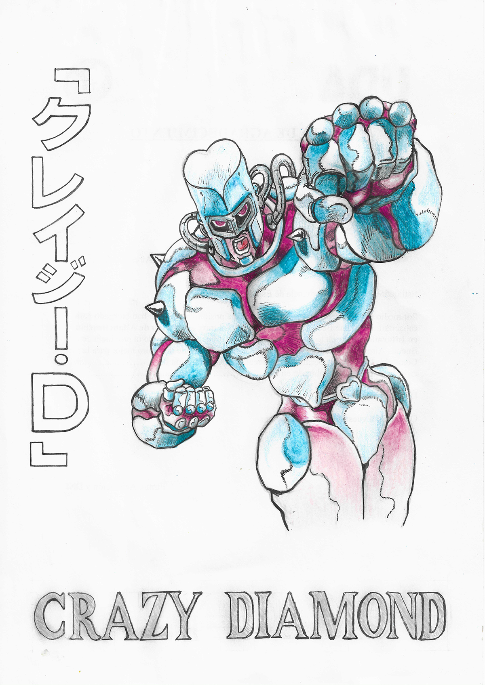
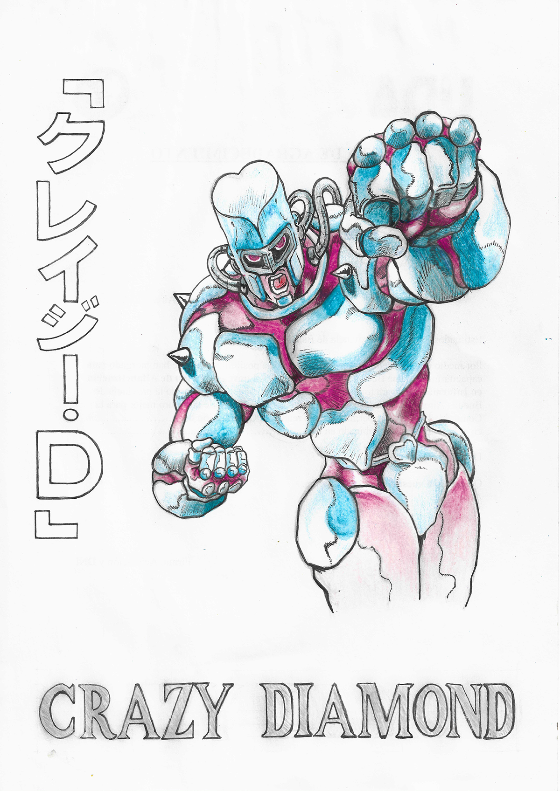

Tipos de diseño
Desde que existen las paginas web, los diseñadores y desarrolladores tuvieron que adaptar la forma en la que se realizaban las mismas. En el caso de los primeros, debiendo ingeniarselas para mantener proporciones y escalas en un medio que no posee tamaños definidos a diferencia del papel; y en el caso de los segundos, para poder transcribir estos conceptos de manera tal que se mantuviese el aspecto del mismo de despropociornarse las dimensiones de la misma.
Fluid Design
Diseño que utiliza porcentajes para definir el aspecto de los elementos representados en la pagina, este tipo de diseño se utiliza desde que existe la web; pero una de sus principales problematicas es que funciona solamente en pantallas medianas/grandes, ya que en otras dimensiones los elementos se estiran o contraen demasiado.
Como alternativa a este diseño surge el Liquid Web Design que se diferencia del anterior, al implementar limites, es decir, maximos y minimos. Pero tambien presenta inconvenientes, en este caso lo que se altera son las proporciones de los espacios entre los elementos.
Adaptive Design
Diseño que implementa la creacion de diferentes paginas, una por cada vista en la que expongamos nuestro sitio. Es una alternativa economica para clientes que cuentan con bajo presupuesto, ya que simplemente nos centramos en diseñar, por ejemplo 2 paginas (mobile, desktop), independientemente de su contenido.
El inconveniente con este tipo de diseño consiste en la duplicidad de contenido, si bien es simple de mantener ya que modificar una vista no afecta a la otra, implica tener que actualizar varios archivos y crear una pagina diferente por dispositivo al que apuntemos. Normalmente se utilizan herramientas que detectan el tamaño de la pantalla para redireccionar el redireccionamiento.
Responsive Design
Tipo de diseño que debe su origen a una publicacion realizada por Ethan Marcotte en el sitio A list apart donde plantea varias cuestiones con respecto al diseño, entre ellas el uso de multimedia flexible, un sistema de grillas y un concepto conocido como One web for All.
Este tipo de diseño fue evolucionando a lo que se conoce como Mobile First y Content First donde en ambos casos se planifica la vista de dispositivos mobiles primero y se procede a agregar elementos a medidas que va cambiando el tamaño de la misma; la diferencia es que en el segundo se utilizan los textos finales.


 
